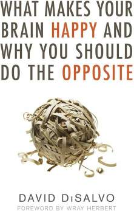

The Happy Brain Paradox
Our brains evolved to prioritize survival through quick, comforting decisions, but these instincts often clash with modern needs, leading to biases and errors.

A science-driven guide to outsmarting your brain’s shortcuts for a better life.
"What Makes Your Brain Happy and Why You Should Do the Opposite," first published in 2011 and updated in 2018 by David DiSalvo, explores the paradox of how our brains crave comfort yet often lead us astray. Drawing from neuroscience, psychology, and behavioral science, DiSalvo reveals how our brain’s pursuit of short-term happiness—through certainty, familiarity, and instant rewards—can sabotage long-term well-being. This "science-help" book offers actionable insights to recognize and counter these mental traps, blending research with real-world examples to help readers live more intentional, fulfilling lives.
Our brains evolved to prioritize survival through quick, comforting decisions, but these instincts often clash with modern needs, leading to biases and errors.
Habits like confirmation bias (seeking what confirms our beliefs) and the need for certainty trick us into poor choices, from overeating to bad investments.
The brain discounts future rewards for instant pleasure, but resisting this urge can yield greater benefits, a concept rooted in evolutionary trade-offs.
When tempted by a sale, pause to question if your brain’s thrill-seeking is overriding your budget, then wait a day before deciding.
Instead of rushing to clear your desk for mental relief, take time to refine a project, countering the brain’s urge for quick closure.
Resist assuming a friend agrees with you (confirmation bias); ask their view to deepen understanding, even if it feels uncomfortable.